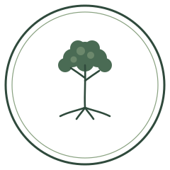

Four directions for Piedmont Environmental — shown on light and dark. Pick one and I'll wire it into the site.

A cleaned-up, balanced version of his original hand-drawn tree-in-circle stamp. Most faithful to the existing brand; classic and trustworthy. Works as a round badge / favicon.
The tree reduced to a solid-green coin paired with a refined serif wordmark. Horizontal lockup that reads well in a site header. Keeps the roots-and-canopy idea, but cleaner and more modern.
A contemporary two-leaf sprout in a rounded tile with a geometric sans wordmark. The most "design studio" / modern of the set — speaks to new growth and fresh starts for a homeowner's yard.
A rustic, woodcut-style scene of the rolling Piedmont hills with a sun and a single tree. Leans into "place" and the regional, ecological story; warmest and most illustrative option.